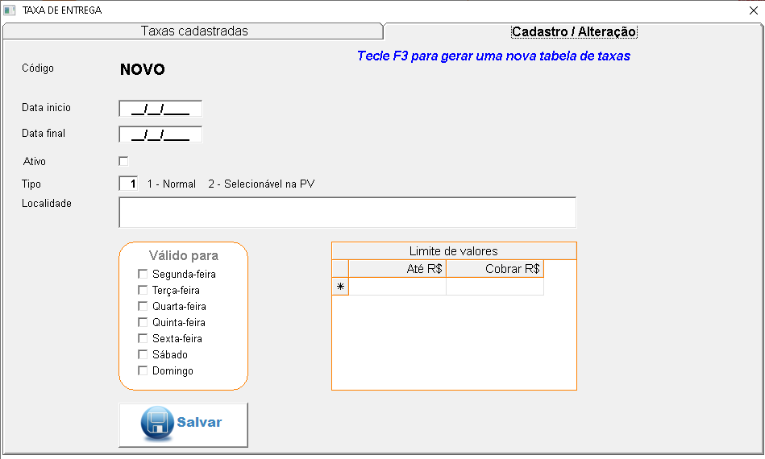
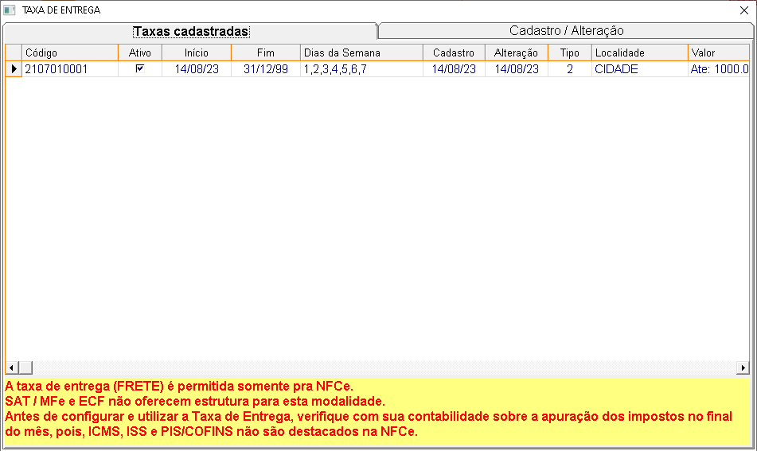

É um valor cobrado pela farmacia para disponibilizar a entrega de mercadorias na residencia de seus clientes. Aperte no topico que deseja para conhecer a funcionalidade de cada opção.
+Procedimentos para cadastrar taxa de entrega:
No sistema:
- Clique em Cadastro/Alteração
- Preencha os campos com as informaçoes da taxa de entrega
- clique em salvar
+Descrição dos campos Cadastro/Alteração:

- Código: Campo exibido como "NOVO" para indicar a criação de uma nova taxa.
- Data de início: Campo para inserir a data de início da validade da taxa.
- Ativo: Checkbox para indicar se a taxa está ativa.
- Tipo: 1 - Normal 2 - Selecionável na PV (Pré Venda)
- Localidade: Campo para inserir a local onde a taxa será aplicada.
- Valido para: Marque os dias que a taxa funcionará.
- Limite de valores: Informe condições de valor da entrega. Ex: compras até 30 reais será
cobrado 5 reais de taxa.
- Botão Salvar: Botão para salvar as informações inseridas e configurar a nova taxa de
entrega.
+Taxas cadastradas
Nessa tela é apresentada as taxas cadastradas na aba Cadasto/alteração.
